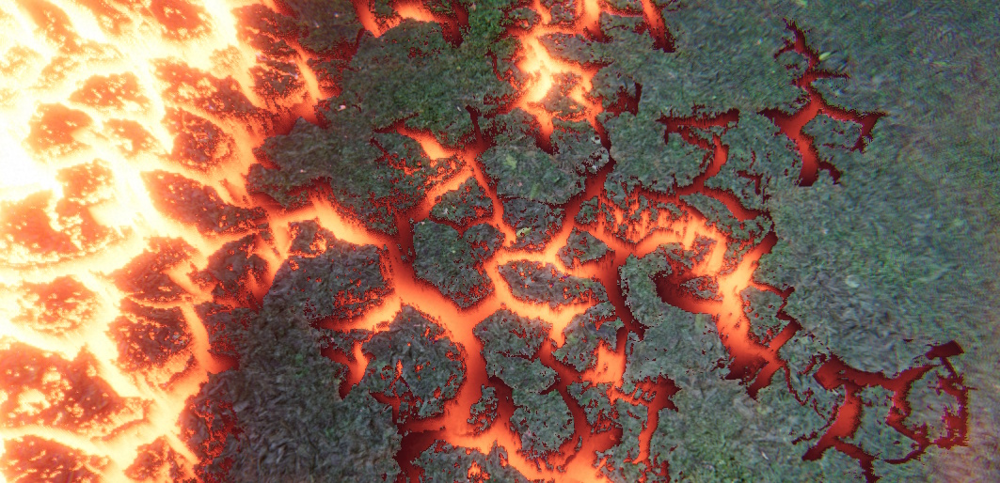
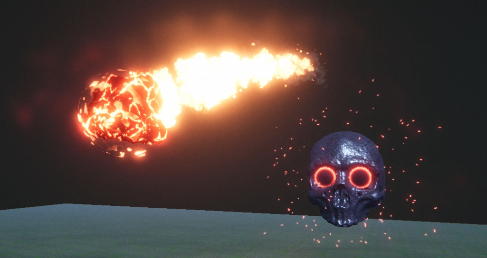
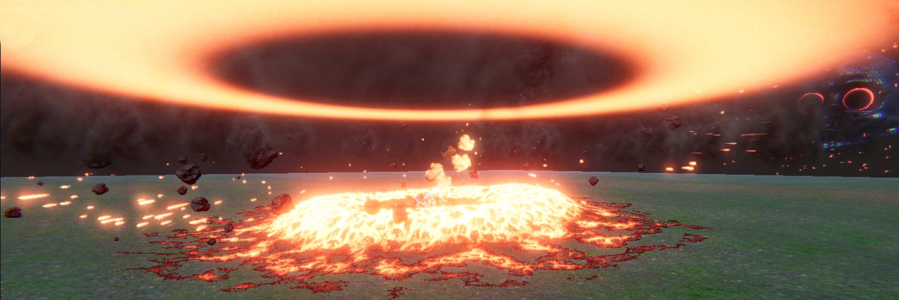
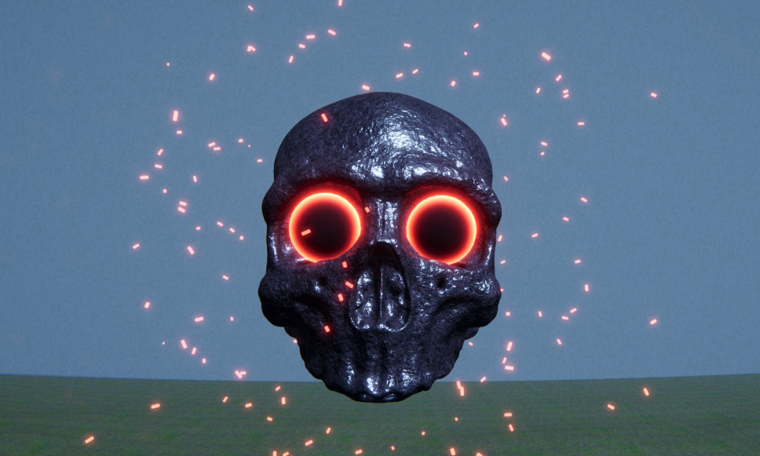

Unity VFX Showcase
A boss fight mockup that I created to gain more experience with Unity's Visual Effect Graph. The main effect is a meteorite explosion with a shockwave that ripples through the ground, which was created with ShaderGraph, VFX Graph, and Material Maker.
The Parallax Occlusion Mapping node is used to give the cracks in the ground the appearance of being 3-dimensional without having to render additional geometry.
The meteorite itself consists of the rocky core, which was created in Blender, a spherical, firey shell around it, created with Shadergraph, and a trail consisting of 3 particles: flames, smoke, and sparks.
I used FMOD for the sound effects as the 3D sound attenuation makes the meteorite explosion sound immersive and powerful, and means the player can tell where the danger is without having to look.
To allow the particles around the boss to be affected by the fog, I created a custom shader graph for them, integrated with their VFX graph.
